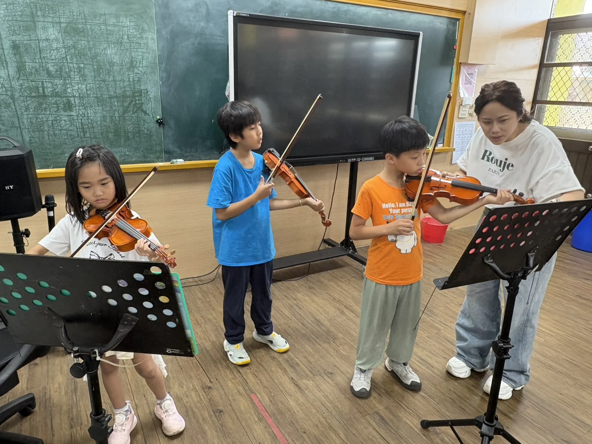
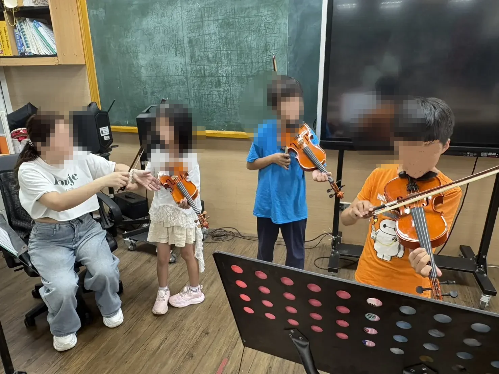
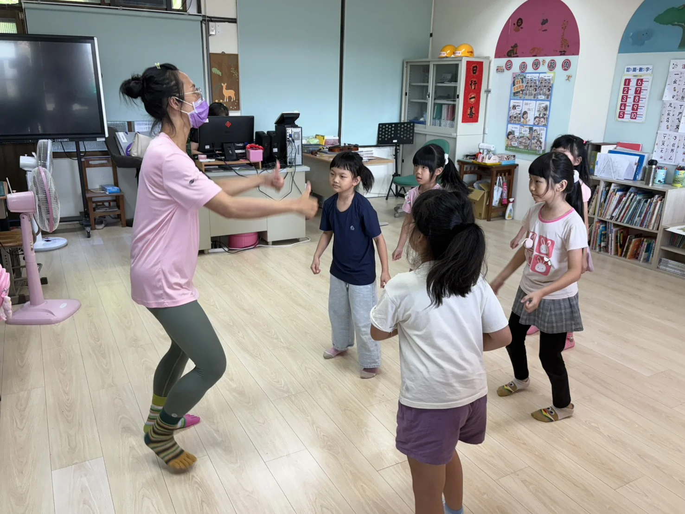
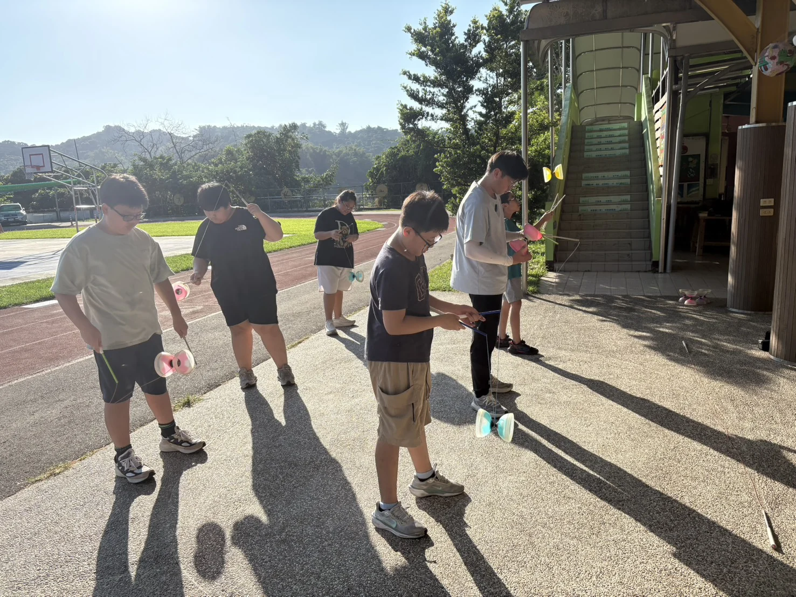
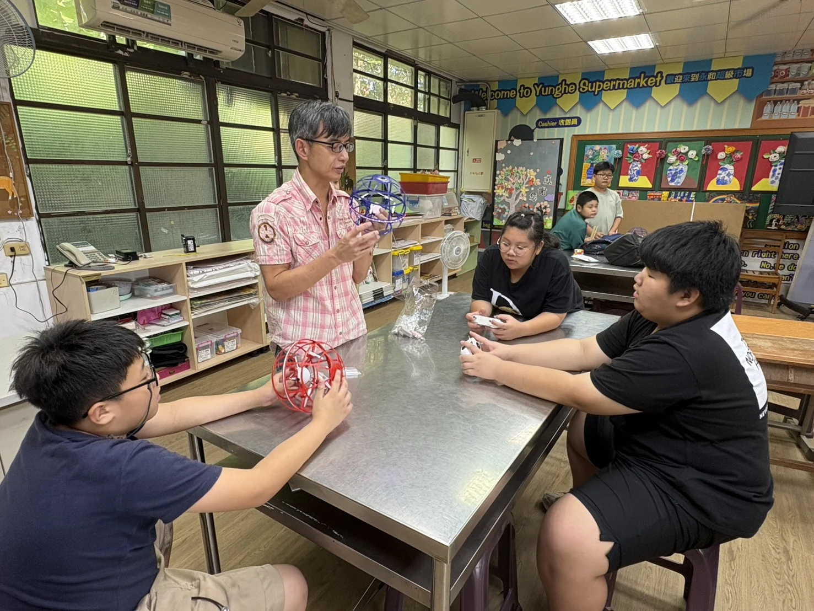

02｜多元探索
讓孩子有機會，
遇見自己的可能
115學年度活化教學與多元試探計畫持續推動藝術、肢體與新興科技課程，並將扯鈴正式納入課程。課程設計從興趣探索、技巧練習一路連到實作與展演。


小提琴
計畫規劃初、進階課程，透過團體與個別指導累積音樂基礎、技巧與表達。

舞蹈
透過肢體開發與團體活動，培養節奏、協作與舞台表現。

扯鈴
從平日反覆練習到正式演出，孩子逐步累積技術與團隊默契。

新興科技
實際執行素材目前包含無人機足球等科技操作；年度計畫則另規劃Micro:bit、智高積木等實作方向。
活化計畫原文將藝術類課程、肢體開發、扯鈴及新興科技列為115學年度推動重點。網站照片呈現「目前實際蒐集到的執行內容」；計畫規劃與實際執行素材不完全相同處，將分開表述。
LEARN BY DOING
做中學，不只把答案做出來
多元課程的價值不只在完成作品或動作，也在於孩子願意嘗試、遇到問題時調整、和同伴討論，再一次把事情完成。